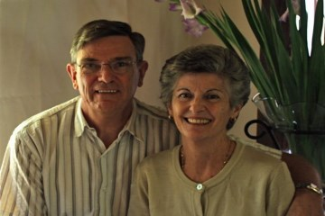

Our Congregation
At MountainView, we understand that God has gifted every believer for ministry and as each person serves according to their gifts and abilities the whole body is built up together. Some of these ministries include serving through music, food preparation and service, teaching, financial administration, maintenance of the building and grounds, prayer, compassion outreach, leading different ministries, planning events, evangelism, hospitality, overseeing the audio and visual presentation, discipleship, youth ministry, visiting the sick and elderly and more. We do not all have the same function, but we are all one in Christ.
Our Leadership
Elders
Brady Farr, Francois Jardine, and Douglas Steytler are the elder-pastors of MountainView Bible Church.
Brady Farr

Brady is an American church-planting missionary with Biblical Ministries Worldwide, who has been serving in pastoral ministry in the U.S and South Africa for the last twenty years.
Francois Jardine

Francois grew up in South Africa, played rugby with the Blue Bulls and the Lions, and has served in pastoral ministry in several other churches before coming to serve at MountainView.
Douglas Steytler
Douglas is Executive Director of Christian Mission International, the Southern African branch of The Voice of the Martyrs. He has been faithfully serving in church leadership for many years.
Deacons
MountainView also has four deacons. These men carry much of the weight of the ministry at MountainView. They are responsible for member care, building care, church finances and coordinating church programs and events.
Our History
Beginnings 2003-2004
Several families, who had been commuting from the south of Johannesburg to Sandton Bible Church in the Fourways area, had the vision to start a new Bible church closer to home. These families asked American missionaries with Biblical Ministries Worldwide, who had been serving at Sandton Bible Church, if they would lead the new church plant in the south.
The initial efforts began with a series of Bible studies, and as God worked through relationships, the group expanded, and on 31 October 2004, Sunday morning services began in Glenanda.
Expansion 2005-2009
MountainView moved to the Sha-Mani Conference Centre in Alberton in 2005 and met there for several years. As children, youth, and ladies' and men's ministries grew, the church to almost 80 believers.
Church Home - 2010-Present
We saved up for years toward the purchase of our own building, and in August of 2010, we purchased a house in Glenanda (four houses away from where MountainView began in 2004!) that had a massive living area that we could renovate into a church hall. The house has become home and is now a very busy place! God has continued to provide leadership for the church through the years from missionaries and local men. As we continue to grow, both in numbers and financially, we look forward to moving into a larger facility in the future.